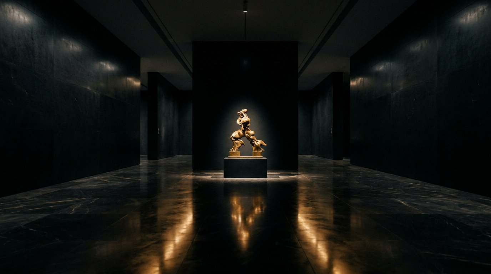
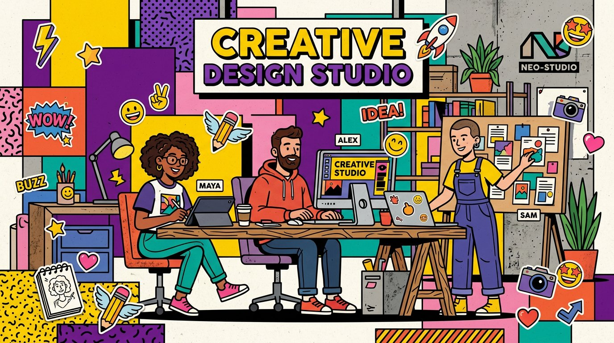
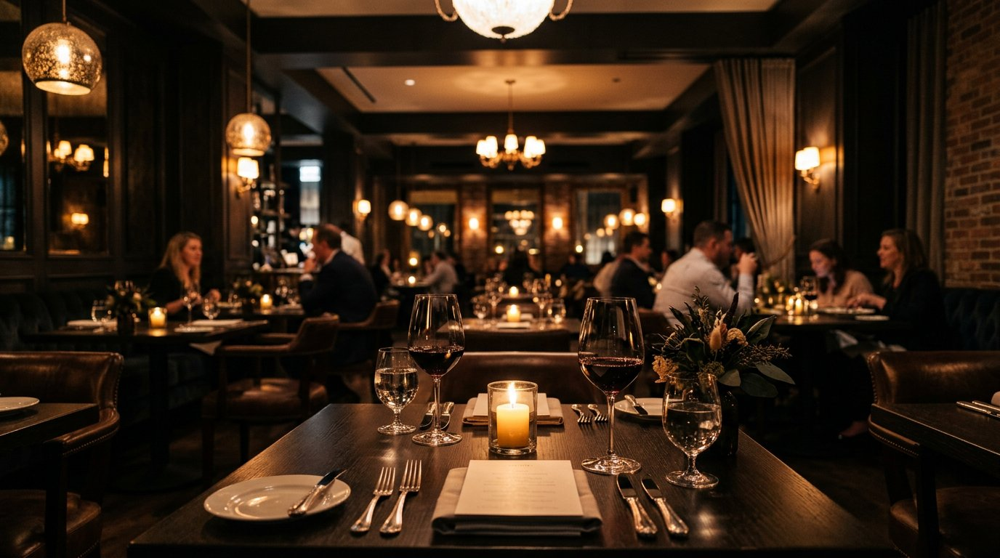
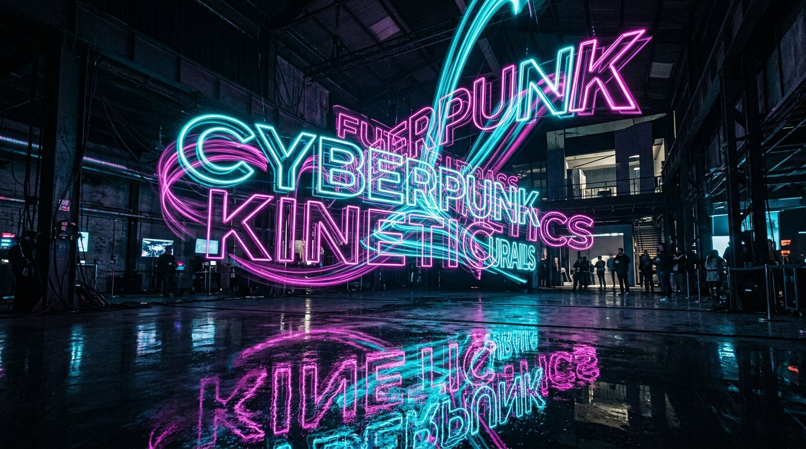

01 · Corporate
商務接洽與企業形象
Stripe / Linear 風格的深色科技感設計，含玻璃擬態卡片、發光邊框、客戶商標輪播與即時驗證的預約諮詢表單。
- Glassmorphism
- Marquee
- Form Validation
Static · HTML5 + Tailwind CDN + GSAP × Lenis · 9 Templates
九款氣質迥異的形象網站範例——從企業商務、生活美學到 Awwwards 等級的動效實驗室。純靜態、零配置，推送即上線。
Style Matrix
以分類篩選快速定位所需風格，每張卡片皆標註關鍵動效與設計技法。
Stripe / Linear 風格的深色科技感設計，含玻璃擬態卡片、發光邊框、客戶商標輪播與即時驗證的預約諮詢表單。

03 · Luxury 04 · E-commerce
04 · E-commerce
Apple / Nothing / Dyson 風格的極致科技工藝感，全螢幕 Hero、Bento 規格網格、互動熱點、媒體評測卡與吸底購買列。

05 · BrutalismGumroad / Figma 潮流的新野蠻主義，鮮明撞色、粗線框、硬陰影、跑馬燈、瀑布流案例與趣味報價計算機。

06 · HospitalityFine Dining 高端法式料理感，沉浸式 Hero、主廚哲理、互動美饌菜單（Tabs + 過敏原）、線上席位預訂與位置包廂。
Apple Keynote 式的釘選捲動序列：360° 旋轉、分層爆發展開、SVG 路徑繪製、文字遮罩擦除與側邊深度儀表板。

08 · Kinetic TypeActive Theory 式的先鋒工作室：磁吸自定義游標、橫向滾動視差展廊、字元波浪抖動與 Kinetic Marquee。
Lusion 式的高互動遊樂場：3D 傾斜流光卡、Canvas 粒子衝擊波、慣性物理拖曳與 Web Audio 微聲效。
Architecture
沒有打包工具、沒有後端依賴。所有頁面皆為獨立 HTML，共用樣式與腳本，部署即上線。